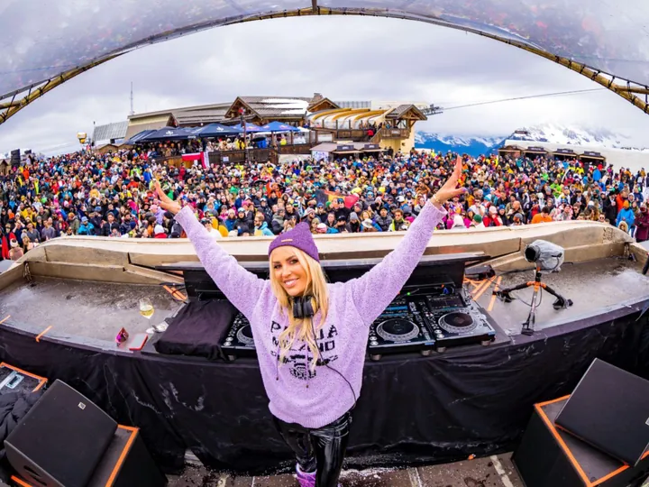

da mar 8 dic a gio 31 dic
Snow place like Super G
A 2.120 metri , l'inverno ha tutta un'altra musica .
 Indicazioni
Indicazioni
- Costi e prenotazioni
- Costo non indicato · Prenotazione non indicata
- Programma
- Programma da verificare. Apri la fonte ufficiale per orari e possibili aggiornamenti.
- In caso di maltempo
- Nessuna indicazione specifica pubblicata.
- Note
- Acquisito automaticamente dalla fonte.
L’EVENTO
Descrizione completa
A 2.120 metri , l'inverno ha tutta un'altra musica .
Quando gli sci si fermano, il divertimento continua: benvenuti al SUPER G Cortina, il mountain club dove l'après-ski diventa un'esperienza da vivere ad alto volume .
Sulle spettacolari piste del Faloria , con le Dolomiti a fare da palcoscenico, preparati a un mix esplosivo di musica, DJ set, grandi ospiti, food experience e party atmosphere. Una terrazza panoramica, un'energia contagiosa e un solo imperativo: trasformare ogni pomeriggio in una festa indimenticabile.
Dicembre porta in quota una lineup tutta da vivere , con artisti e protagonisti della scena musicale pronti ad accendere la stagione. Dal primo brindisi al ritmo che fa ballare, ogni appuntamento ha una sua colonna sonora.
E quando il sole incontra le montagne, il party è appena cominciato!
IL PROGRAMMA – DICEMBRE 2026
8 dicembre · FONTI | ore 15:30 12 dicembre · CALL ME AURA | ore 14:30 18 dicembre · MAGH & GINO LANZAFAME | ore 15:30 19 dicembre · MAZAY | ore 15:30 27 dicembre · IL PAGANTE | ore 15:30 28 dicembre · TOY TONICS – KAPOTE – SAM RUFFILLO | ore 15:30 29 dicembre · LUDWIG | ore 15:30 30 dicembre · MAZAY | ore 15:30 31 dicembre · CALL ME AURA | ore 15:30
La montagna non è mai stata così elettrizzante. Il tuo inverno ha un nuovo ritmo: meet us at SUPER G!
IL PROGRAMMA
Programma e orari
Appuntamenti raccolti dalle fonti elencate. Dove manca un orario, non è ancora disponibile in questa scheda.
Programma pubblicato
- 2026-12-08 — 2026-12-08 · 15:30:00
- 2026-12-12 — 2026-12-12 · 14:30:00
- 2026-12-18 — 2026-12-18 · 15:30:00
- 2026-12-19 — 2026-12-19 · 15:30:00
- 2026-12-27 — 2026-12-27 · 15:30:00
- 2026-12-28 — 2026-12-28 · 15:30:00
- 2026-12-29 — 2026-12-29 · 15:30:00
- 2026-12-30 — 2026-12-30 · 15:30:00
- 2026-12-31 — 2026-12-31 · 15:30:00
INFORMAZIONI UTILI
Prima di partire
- Controllare la fonte prima di partire.
ORGANIZZAZIONE